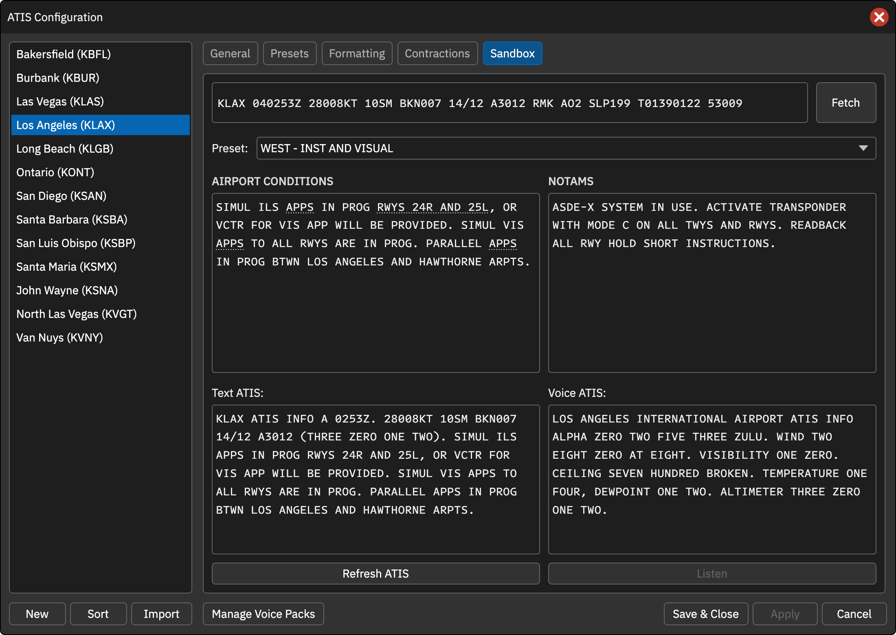

沙盒测试
Sandbox 允许不连接 CAN FSD 席位就测试配置。它不是完全离线模式：获取 METAR、D-ATIS、调用外部生成器和在线 TTS 仍会发起网络请求。
测试步骤
- 获取最新 METAR，或手动填写完整报文。
- 选择预设。
- 按需编辑机场运行情况和通告，点击标题管理固定消息；修改可以保存到预设。
- 如果在其他标签页改了配置，先点击 Apply。
- 点击 Refresh ATIS 生成文字；启用且可用的 TTS 或 WAV 包也会生成音频。
- 音频已生成后点击 Listen，通过本地音频设备试听。
每次刷新使用席位字母范围内的随机字母。外部生成器预设会用提示替代运行情况和通告输入框，因为内容由外部服务返回。D-ATIS 预设会尝试获取当前数字情报。
没有声音时
- 录音模式不会凭空合成音频。
- WAV 包必须覆盖实际需要的词句；缺词时查看提示并补齐。
- 原版 TTS 列表不代表已开通公共 CAN 合成服务。
- 试听需要可用的 NativeAudio 和播放设备。
本地试听成功仅说明音频生成和播放正常，不等于 Mumble 已上线或频道中的飞行员已听到。
操作截图参考
以下为上游原版截图，保留英文标签。用于定位操作；品牌、登录字段与网络行为以本页 CAN 说明为准。
